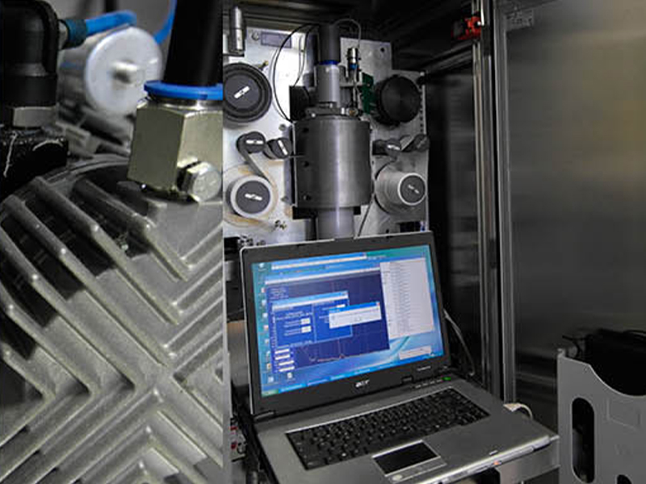

Measuring of radioactive aerosols, especially artificial nuclides
The AMS02T is a step-belt filter device with simple maintenance-free mechanics and high nuclear sensitivity. Alpha, beta, gamma, aerosol and elementary iodine – in just one measuring system.
The AMS02T has a one and two-detector measuring system: When using a single-detector system, a PIPS detector is always used for alpha and beta (radon) measurement with a glass fibre filter. In a two-detector system, an additional NaI(Tl) scintillation detector GSP02 or a LaBr3(Ce) scintillation detector GSP02 for aerosol gamma and elementary iodine measurements is installed.
The device has two filter belts. The upper one is a 60 mm wide glass fibre belt for collecting aerosol, the lower one is a 60 mm wide, activated carbon impregnated filter belt for storage of elementary iodine. The filter belt drive switches the filter on every 1 to 3 days (adjustable) in the normal measuring mode. In case of an incident, one step is taken each hour to use fresh filter paper. Normally, a filter roll will last for about a year. The measuring chamber is located in a Bleiburg. This dampens the natural background radiation by at least an order of magnitude. The nominal volume of the maintenance-free pump is 3.5 m³/h. The flow rate is measured indirectly via pressure sensors and a temperature sensor.

-
All detectors are autonomously working intelligent detectors with continuously automatic energy calibration through built-in 1k channels MCA (multi-channel analyser) controlled by a microcontroller. All these intelligent detectors communicate via an RS422 communications bus connected to a PC or notebook via a single USB cable. Main applications for the ASM02T On-line Aerosol Tape Filter System:
- As a monitoring system in a network for a large-scale early-warning system
- Monitoring of nuclear installations and facilities for the storage and treatment of nuclear waste
- Measuring unit in scientific and development institutions
- Municipal control unit, mainly for the immediate control of accident radiation of the nuclear industry
The presence of non-natural radioactivity on one of the filters is detected by alpha, beta and/or gamma measurement. In the case of a warning or alarm signal, a third sampling and measuring unit is activated. The air stream exiting the molecular iodine filter is directed to an additional measuring position to detect organic iodine. The 500 filters are transported to the measuring positions with a manipulator and returned to the magazine after the measuring cycle.
AMS02T Aerosol Filter Belt Device – the universal, flexible radioactivity measurement station
- UNIVERSAL: alpha, beta, gamma radiation, aerosol particles and elementary iodine - in just one measuring unit
- FLEXIBLE: The AMS02-T unit is housed in a 19-inch rack and can be mounted in a separate cabinet or on the wall. Likewise, the installation in a vehicle is possible.
Well-founded know-how delivers precise results
Unique evaluation algorithms that have been used and developed for more than 20 years provide accurate results - every measurement sequence. The smallest detectable radioactivity was calculated and determined for all detectors in the system, taking only realistic sampling and measurement situations into account.
Sophisticated measuring technology ultimately makes the difference
- A special vacuum pump ensures constant volume, regardless of temperature and filter deterioration – 7/24 – non-stop.
- The AMS02T Aerosol Filter Belt Sampler can be supplied as a single or dual detector system.
- Choice of the 2nd gamma-spectrum detector system (GSP02) with NaI(Tl) or LaBr3(Ce) scintillator.
Options for the AMS02T Online Aerosol Filter Tape Sampler
-
Weatherstation for ASU
- Temperature
- Relative humidity
- Air pressure
- Wind speed, wind direction
- Precipitation
- GHIMM Cloud SCADA Software
- LED monitor with backlight
- UPS 1500VA
- VPN UMTS router
Operation-Centre
Applications of AMS02T
Early radiation warning system
In nationwide early radiation warning systems, aerosol monitoring systems are used to detect, above all, nuclear accidents, e.g. the Chernobyl or Fukushima disaster to warn the population in time. This applies in particular to radioactive iodine, since its presence in the air is considered to be solid evidence of a nuclear incident - and its rapid rate of propagation as a primary indicator.
Monitoring of nuclear installations
Aerosol monitoring systems are used to monitor nuclear power plants for power generation or nuclear facilities to produce isotopes for technical and medical applications.
Monitoring of the Nuclear Test Ban
The monitoring is the responsibility of the Comprehensive Test Ban Treaty Organization (CTBTO) based in Vienna. Its tasks include the establishment and maintenance of an international verification system (International Monitoring System, IMS). Currently, the verification system consists of over 300 monitoring stations, many of which are aerosol monitoring systems for the determination of radioactivity in the air.
Main Technical Parameters
- Size: 700mm x 700mm x 1950mm
- Weight: < 100 kg
- Power: 230 V AC / 50 Hz / < 200 VA
- Environment: Temperature -10°C + 40°C
- Relative Humidity: 0 - 90 % non-condensing
Detectors
- PIPS 1700 mm²
- 2“ x 2“ NaI(Tl) - resolution < 8 % (137Cs 662 keV)
- 1.5“ x 1.5“ LaBr3(Ce) - resolution < 3 % (137Cs 662 keV)
Pump
- Nominal flow rate > 3,5 (normal) m3/h for optional order 8 m3/h external one
Filters
- 60 mm wide glass fibre filter tape
- 60 mm wide iodine filter tape